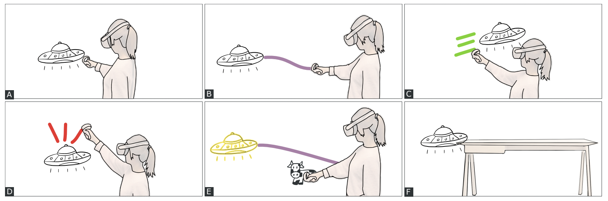
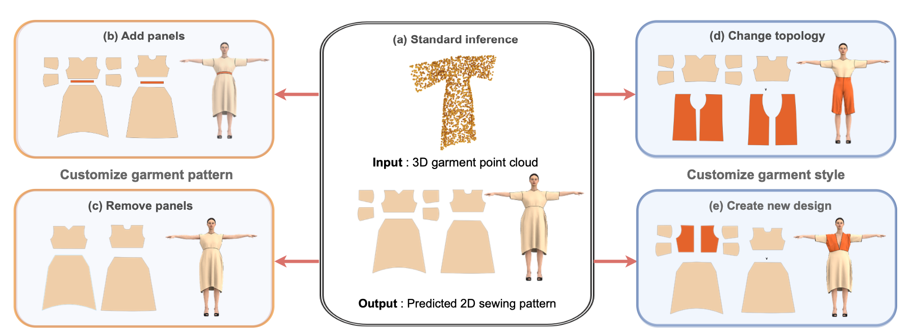
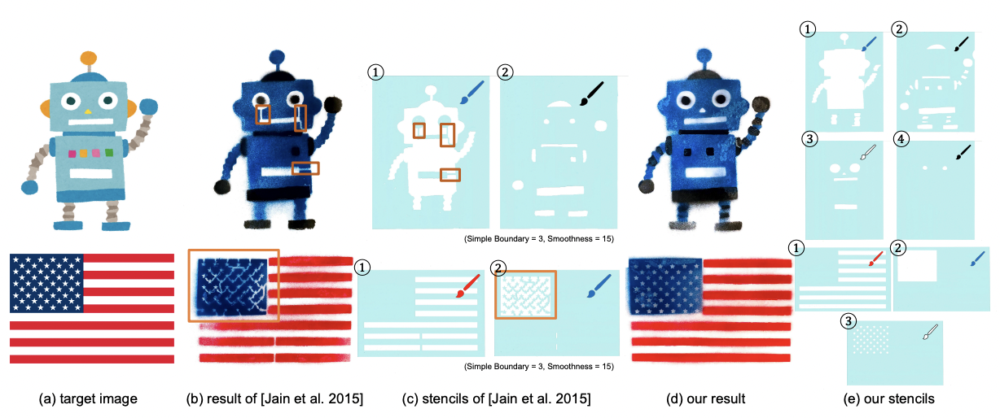
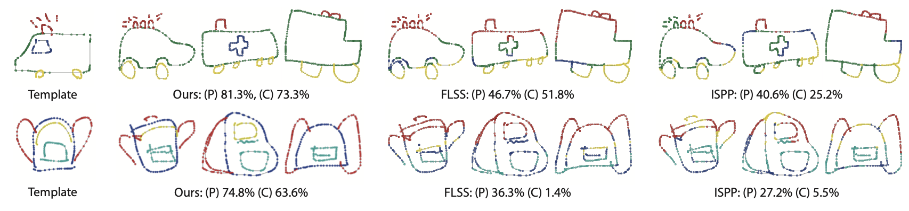
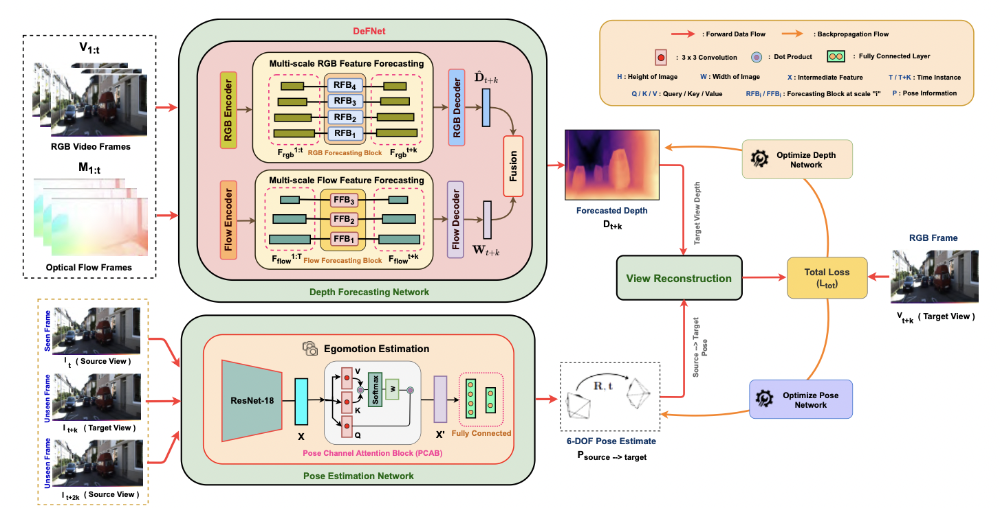
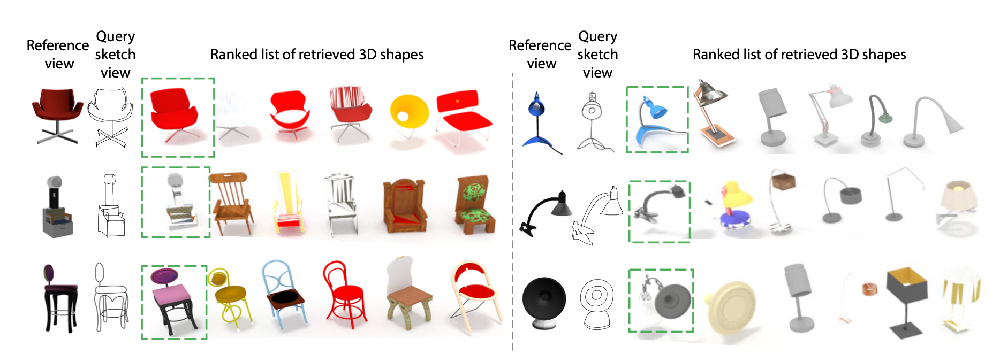

Anran Qi

Postdoctoral Researcher
Igarashi LaboratoryUniversity of Tokyo
E-mail: annranqi1024@g.ecc.u-tokyo.ac.jp
I am a postdoctoral researcher in Igarashi Laboratory at The University of Tokyo,
working with Prof. Takeo Igarashi .
My research forces on Graphics, Deep Learning and HCI for garment design and human sketching.
About Me
Working Experience
|
University of Tokyo Project Assistant Professor Advisor: Prof. Takeo Igarashi |
Apr. 2023 - Now |
|
University of Tokyo Postdoctoral Researcher Advisor: Prof. Takeo Igarashi Research on next-generation knit innovation |
Nov. 2021 - Mar. 2023 |
|
Samsung Electronics, UK Assistant Engineer Advisor: Dr. Mete Ozay |
Jan. 2020 - July 2020 |
Education Background
|
University of Surrey (UoS) Ph.D. in Computer Science, SketchX Lab Supervisor: Prof. Yi-Zhe Song, Dr. Yulia Gryaditskaya Prof. Tao Xiang *Transfer from QMUL to UoS with supervisors |
Apr. 2019 - Oct. 2021 |
|
Queen Mary University of London (QMUL) Ph.D. in Computer Science, SketchX Lab Supervisor: Prof. Yi-Zhe Song, Prof. Tao Xiang |
Sept. 2017 - Apr. 2019 |
|
Queen Mary University of London (QMUL) B.Sc (Hons) in Telecommunications Engineering with Management |
Sept. 2013 - Jun. 2017 |
|
Beijing University of Posts and Telecommunications (BUPT) B.Sc in Telecommunications Engineering with Management |
Sept. 2013 - Jun. 2017 |
Publication
|  |
Eve Mingxiao Li, Anran Qi,Mauricio Sousa, Tovi Grossman Graphics Interface 2023 [PDF] |
|  |
Anran Qi, Sauradip Nag, Xiatian Zhu, Ariel Shamir Arxiv [PDF] |
|  |
Yuta Fukushima, Anran Qi, I-Chao Shen and Takeo Igarashi SIGGRAPH ASIA 2022 Technical Communication, 2022 [PDF] |
|  |
Anran Qi, Yulia Gryaditskaya, Tao Xiang and Yi-Zhe Song IEEE Transactions on Image Processing (TIP), 2022 [PDF] |
|  |
Sauradip Nag*, Nisarg A Shah*, Anran Qi* and Raghavendra Ramachandras IML4AD Workshop in Advances in Neural Information Processing Systems (NIPSW), 2021 [PDF] |
|  |
Anran Qi, Yulia Gryaditskaya, Jifei Song, Yongxin Yang, Yonggang Qi, Timothy M. Hospedales, Tao Xiang and Yi-Zhe Song IEEE Transactions on Image Processing (TIP), 2021 [PDF] |

|
Anran Qi, Yi-Zhe Song and Tao Xiang British Machine Vision Conference (BMVC), 2018 [PDF] |